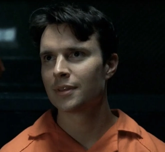
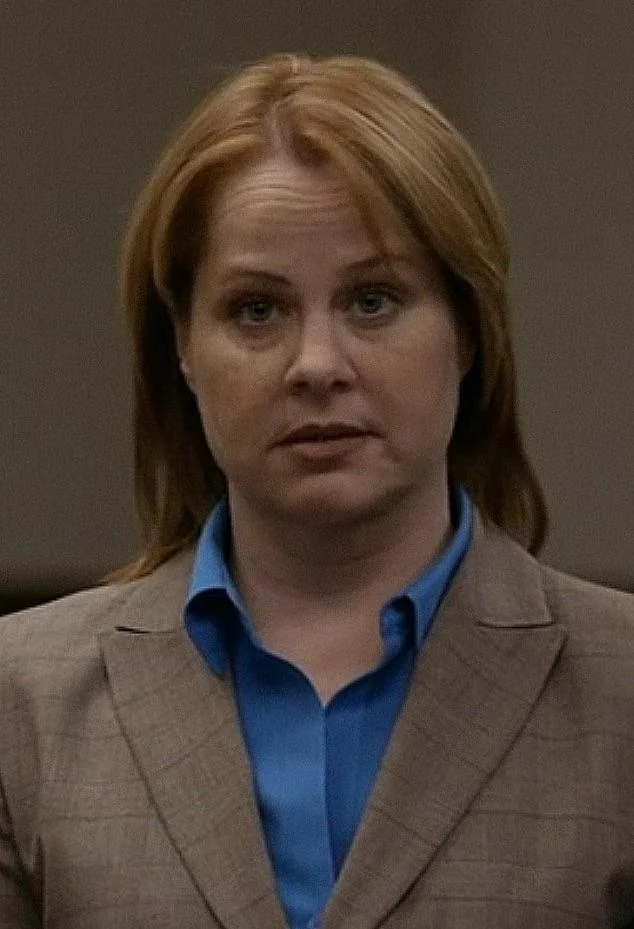
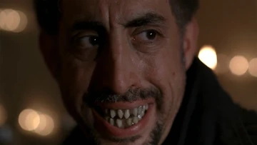
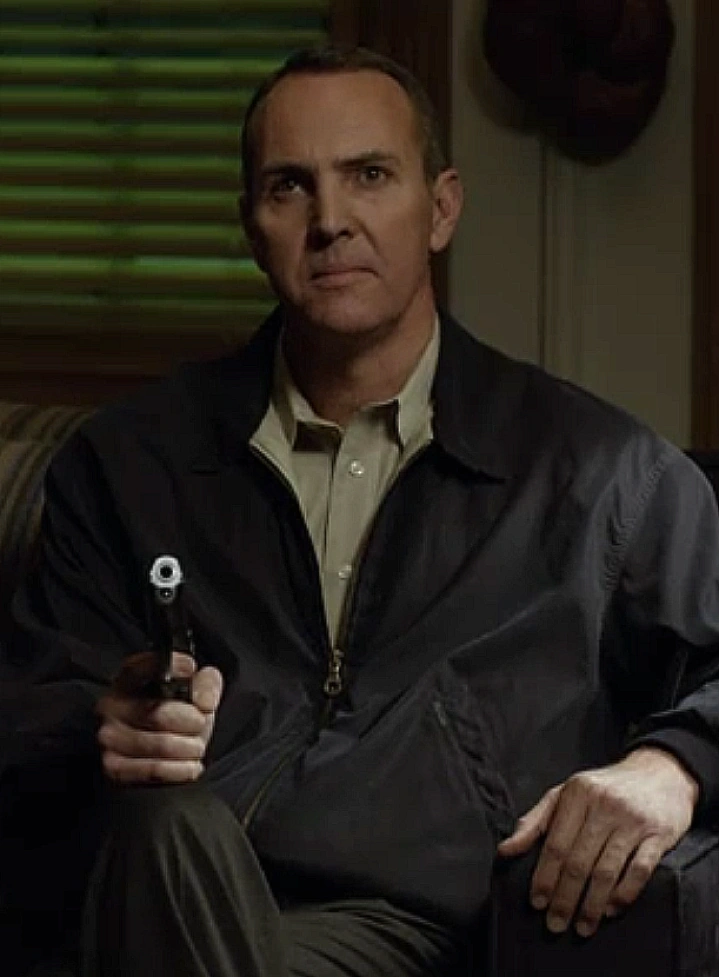
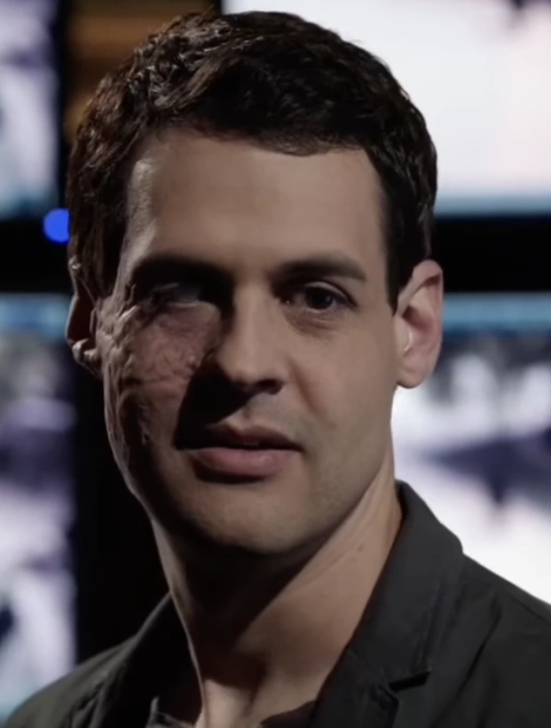

Nel corso delle sue dodici stagioni, Bones presenta diversi serial killer ricorrenti che hanno lasciato un segno profondo nella narrazione. Qui trovi una panoramica dei principali antagonisti che hanno messo alla prova il Jeffersonian e l'FBI.

Howard Epps
Uno dei primi e più inquietanti serial killer della serie. Epps è un manipolatore brillante che riesce a influenzare eventi anche da dietro le sbarre, diventando una minaccia costante per Brennan e Booth.

Il Becchino
Il Becchino, identità segreta della fredda Heather Taffet, è una delle antagoniste più inquietanti di Bones: una procuratrice dall'aspetto impeccabile che nasconde una mente calcolatrice, capace di rapire e seppellire vive le sue vittime per ottenere denaro e potere psicologico. La sua doppia natura — figura della legge e carnefice — destabilizza profondamente Brennan, Booth e il team, costringendoli a confrontarsi con un male che si mimetizza nelle istituzioni e colpisce con precisione chirurgica. Proprio questa combinazione di controllo, manipolazione e apparente rispettabilità rende il Becchino uno dei villain più memorabili e disturbanti dell'intera serie.

Gormogon
Un assassino cannibale legato a un antico culto segreto. La sua presenza porta a uno dei tradimenti più scioccanti della serie e rappresenta una minaccia tanto ideologica quanto fisica.

Jacob Broadsky
Jacob Broadsky, ex cecchino dell'FBI e mentore di Booth, incarna la deriva morale di chi trasforma il proprio addestramento in una missione personale di “giustizia”. La sua convinzione di poter decidere chi merita di vivere o morire lo rende un vigilante imprevedibile, capace di colpire con precisione assoluta e di mettere Booth di fronte al lato più oscuro della loro stessa formazione. La sua presenza introduce un conflitto etico profondo, perché Broadsky non agisce per vendetta o denaro, ma per un'idea distorta di ordine, rendendolo uno degli avversari più difficili da anticipare e fermare.

Christopher Pelant
Christopher Pelant è un genio informatico che trasforma la tecnologia in un'arma psicologica, infiltrandosi nei sistemi, manipolando prove e orchestrando scenari che mettono il team del Jeffersonian costantemente sulla difensiva. La sua capacità di colpire a distanza, di riscrivere la realtà digitale e di insinuarsi nella vita privata di Brennan e Booth lo rende un antagonista subdolo e onnipresente, più vicino a un'ombra che a un criminale tradizionale. Pelant non mira solo a sfuggire alla cattura: vuole destabilizzare, isolare e controllare, diventando uno dei villain più iconici e destabilizzanti dell'intera serie.